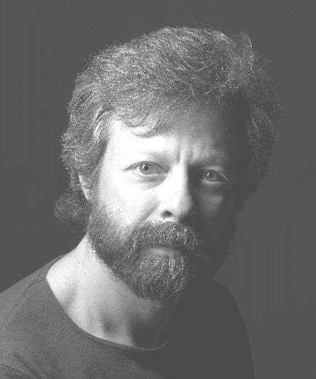

See pictures and video from last year!
| Newton resident and former Franklin parent Rob Siegel (robsiegel.com) is well known in Boston folk music circles as an innovative songwriter who produces memorable, intelligent, well-crafted songs rooted in his suburban existence. Whether probing the mysteries of religion, the awkwardness of running into an old flame who didn't remember him, or fantasizing about running into his 21-year-old self and drinking him under the table, Rob's songs provide both funny and serious vectors to connect with an audience. Sing Out magazine says "Siegel's talents run far wider than great writing; he is uniquely entertaining and thoughtful." Rob has opened for Bill Staines, Vance Gilbert, Jack Hardy, and others. His recent CD "Voices from the Right Brain: Rob Siegel Live at Club Passim" reached #52 on the Folk DJ charts. |  |
| Former Newton resident Mark Stepakoff (markstepakoff.com) enjoys a growing reputation as one of the area's sharpest songwriters. Mark won first place in both the Great American Song Contest and the American Songwriter Magazine's lyric contest, and was a finalist in the USA Songwriting and Plowshares Songwriting contests. Mark is best known for his laugh-out-loud funny material which has received airplay on Dr. Demento's nationally syndicated radio program. Mark's wry sense of humor takes on subjects as diverse as barbecue sauce, General Gao's chicken, and actress Amanda Peet. But his serious material is also riveting; his moving ballad about Boston's 1972 Hotel Vendome fire led to an invitation for him to perform the song at a memorial service for the firefighters who perished. |
| Newton's Cindy Mapes is a member of "Constellations," a group of women who perform original compositions and traditional and contemporary folk music from around the world. Performing both a cappella and accompanied by guitar, flute, violin, and percussion,"Constellations" includes Jackie Damsky, Brett Frechette, Sue Kranz, Liz Lewis, and Jan Maier. Dedicated to the promotion of peace and social justice, they are known for their delightful harmonies and for involving their audiences in music-making. |
|

This year's roster of other performers includes Franklin parents and friends Pamela McA'Nulty and Don Levey, Jennifer O'Brien, Michael Rizzo, Carroll Eastman, and Sara Seals.
The event is from 7:00 to 10:30 pm. Doors open at 6:30. Tickets are $15, available at the door to adults 21 or over. Refreshments include coffee, wine and beer, juice and soda, and snacks.
For more information, contact Cindy Mapes at 617-527-4858 or at midwintercoffeehouse@franklinpto.org. The event is wheelchair-accessible.